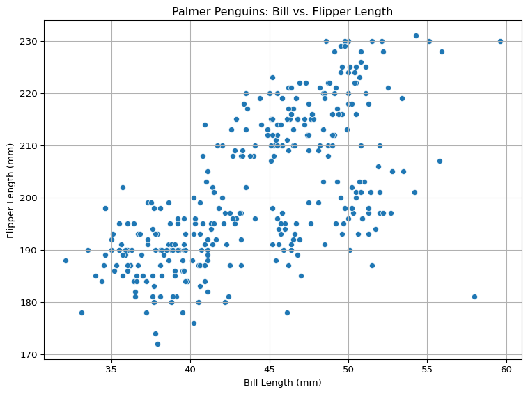
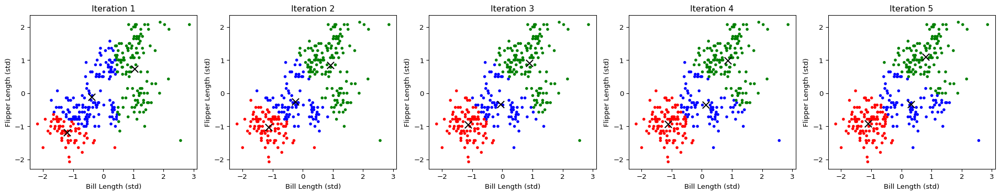
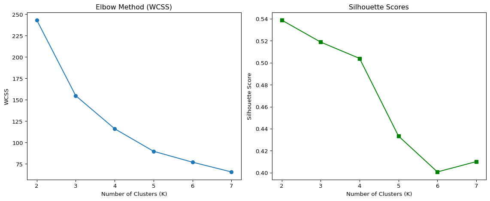

In this analysis, we apply the K-Means algorithm to cluster penguin observations based on physical measurements. Since there are no labels provided, K-Means operates solely on input features, making this a classic example of unsupervised learning.
Data Overview
Before implementing k-means, we briefly summarize the dataset and focus on two key features: bill length and flipper length from the Palmer Penguins dataset.
For the purpose of this analysis, we focus on two numerical features:
Variable
Description
bill_length_mm
Length of the penguin’s bill in millimeters
flipper_length_mm
Length of the penguin’s flipper in millimeters
These features provide a morphological basis for clustering.
Code
import pandas as pd# Load the datasetdf = pd.read_csv("palmer_penguins.csv")# Select relevant variables and drop missing valuesdf_clean = df[["species", "bill_length_mm", "flipper_length_mm"]].dropna()# Show basic descriptive statisticsdf_clean.describe()# Show a sample of the datadf_clean.head()
species
bill_length_mm
flipper_length_mm
0
Adelie
39.1
181
1
Adelie
39.5
186
2
Adelie
40.3
195
3
Adelie
36.7
193
4
Adelie
39.3
190
The scatterplot below shows the relationship between bill length and flipper length. We observe clear groupings and a strong positive relationship — penguins with longer bills tend to have longer flippers. This structure suggests that K-Means clustering may reveal meaningful group separation in this two-dimensional space.
Code
import pandas as pdimport seaborn as snsimport matplotlib.pyplot as pltdf = pd.read_csv('palmer_penguins.csv')plt.figure(figsize=(8, 6))sns.scatterplot(x="bill_length_mm", y="flipper_length_mm", data=df)plt.title("Palmer Penguins: Bill vs. Flipper Length")plt.xlabel("Bill Length (mm)")plt.ylabel("Flipper Length (mm)")plt.grid(True)plt.tight_layout()plt.show()

K-Means Clustering
We begin by implementing the K-Means algorithm from scratch and visualizing its iterative convergence. This not only reinforces our understanding of the algorithm’s internal mechanics but also highlights its ability to uncover natural groupings in the data.
Code
import pandas as pdimport numpy as npimport matplotlib.pyplot as pltfrom sklearn.preprocessing import StandardScaler# Load the penguin datasetdf = pd.read_csv("palmer_penguins.csv")# Keep only the columns needed for K-meansdf_kmeans = df[["bill_length_mm", "flipper_length_mm"]].dropna()# Standardize the datascaler = StandardScaler()X = scaler.fit_transform(df_kmeans)# Initialize centroids (k=3) randomly from existing pointsk =3np.random.seed(42)initial_centroids_idx = np.random.choice(X.shape[0], k, replace=False)centroids = X[initial_centroids_idx]# Function to assign clustersdef assign_clusters(X, centroids): distances = np.linalg.norm(X[:, np.newaxis] - centroids, axis=2)return np.argmin(distances, axis=1)# Function to update centroidsdef update_centroids(X, labels, k):return np.array([X[labels == i].mean(axis=0) for i inrange(k)])# Perform K-means manually for 5 iterationshistory = []for iteration inrange(5): labels = assign_clusters(X, centroids) centroids = update_centroids(X, labels, k) history.append((centroids.copy(), labels.copy()))# Plot results of each iterationfig, axes = plt.subplots(1, 5, figsize=(20, 4))colors = ['red', 'green', 'blue']for i, (centroids_iter, labels_iter) inenumerate(history): axes[i].scatter(X[:, 0], X[:, 1], c=[colors[label] for label in labels_iter], s=10) axes[i].scatter(centroids_iter[:, 0], centroids_iter[:, 1], color='black', marker='x', s=100) axes[i].set_title(f"Iteration {i+1}") axes[i].set_xlabel("Bill Length (std)") axes[i].set_ylabel("Flipper Length (std)")plt.tight_layout()plt.show()

The animation above illustrates the internal workings of the K-Means algorithm applied to the penguin data. We initialized 3 cluster centers and allowed the algorithm to run for 5 iterations.
Each subplot represents a step of the algorithm:
Iteration 1: Initial cluster centers are randomly placed. Points are assigned to the nearest cluster, and centroids are recalculated based on those assignments.
Subsequent Iterations: Clusters begin to stabilize as points are re-assigned and centroids shift to better reflect group centers.
Iteration 5: By the fifth iteration, cluster assignments converge and centroids settle into consistent positions.
The colors represent the cluster membership of each penguin, while black “x” markers indicate the positions of the cluster centers at each iteration.
This visualization demonstrates that K-Means effectively separates the penguins into meaningful groups based on bill length and flipper length — two features that show strong structural patterns.
Such clustering approaches are particularly useful in biological research, where group labels are not observed and organisms must be classified based on shared physical characteristics.
Evaluate Clustering Quality
After implementing K-Means, the next step is to determine the optimal number of clusters. A good number of clusters should balance compactness (tight grouping) and separation (distinct clusters). We use two common evaluation metrics:
Within-Cluster Sum of Squares (WCSS): Measures the compactness of clusters. A lower WCSS indicates tighter clusters. The “elbow point” in the WCSS plot suggests the best value of ( K ).
Silhouette Score: Measures how well-separated the clusters are. Values range from −1 to 1. A higher score indicates better-defined clusters.
We compute these scores for values of ( K ) ranging from 2 to 7.
Code
import pandas as pdimport numpy as npimport matplotlib.pyplot as pltfrom sklearn.cluster import KMeansfrom sklearn.metrics import silhouette_scorefrom sklearn.preprocessing import StandardScaler# Load datadf = pd.read_csv("palmer_penguins.csv")df = df[["bill_length_mm", "flipper_length_mm"]].dropna()# Standardize featuresscaler = StandardScaler()X = scaler.fit_transform(df)# Evaluate WCSS and silhouette for K = 2 to 7wcss = []silhouette = []K_range =range(2, 8)for k in K_range: kmeans = KMeans(n_clusters=k, n_init=10, random_state=42) labels = kmeans.fit_predict(X) wcss.append(kmeans.inertia_) silhouette.append(silhouette_score(X, labels))# Plot resultsfig, axes = plt.subplots(1, 2, figsize=(12, 5))axes[0].plot(K_range, wcss, marker='o')axes[0].set_title("Elbow Method (WCSS)")axes[0].set_xlabel("Number of Clusters (K)")axes[0].set_ylabel("WCSS")axes[1].plot(K_range, silhouette, marker='s', color='green')axes[1].set_title("Silhouette Scores")axes[1].set_xlabel("Number of Clusters (K)")axes[1].set_ylabel("Silhouette Score")plt.tight_layout()plt.show()

Elbow Method: WCSS drops sharply from 2 to 3 clusters, and flattens afterward. The “elbow” at ( K = 3 ) suggests adding more clusters yields little additional compactness.
Silhouette Score: Scores peak at ( K = 2 ), with a modest decline at ( K = 3 ). While 2 clusters are well-separated, 3 still offer good definition and may be preferred if supported visually.
We proceed with ( K = 3 ) as the best balance between compactness and separation.
Use Built-in K-Means for Comparison
After evaluating the optimal number of clusters using WCSS and silhouette scores (which suggested K = 3), we now apply the built-in KMeans function from scikit-learn to cluster the penguins. This allows us to compare results with our manual implementation and verify consistency.
Each color represents one of the identified clusters, and the red “X” markers denote the final positions of the cluster centroids.
The clusters are well-separated and closely mirror the output of our manual K-Means implementation, confirming that the algorithm is functioning as expected.
This comparison helps validate the logic of our scratch implementation, and reinforces that both versions converge on similar grouping patterns.
The built-in KMeans implementation confirms the patterns observed in our manual clustering. The three clusters are well-separated and exhibit strong alignment with the underlying data structure based on bill length and flipper length. The red “X” markers show the final centroids, which are close to those found in our scratch version. This further validates our earlier approach and demonstrates the consistency of K-Means results when implemented both manually and using standard libraries.
2b. Key Drivers Analysis
Understanding what drives customer satisfaction is a central goal in marketing analytics. In this section, we use a dataset containing user ratings on various payment card features to examine which attributes—such as trust, service quality, or rewards—most influence overall satisfaction.
Rather than relying on a single statistical method, we implement a suite of techniques to assess feature importance, including correlation, regression, Shapley values, Johnson’s weights, and Random Forest Gini importance.
Data Overview
The dataset includes customer feedback on various aspects of a payment card and an overall satisfaction score. Each row represents a respondent’s satisfaction ratings on multiple features of their credit card. The key variables are:
Variable
Description
brand
Brand perception
id
Anonymized respondent ID
trust
Perception of brand trustworthiness
build
Helps build credit
differs
Perceived uniqueness of the card
easy
Ease of use
appealing
Benefits and aesthetics
rewarding
Reward value
popular
Card popularity
service
Customer service quality
impact
Personal impact or life improvement
satisfaction
Overall satisfaction score (target variable)
All ratings are numeric and likely measured on the same scale (e.g., 1 to 10), allowing for direct comparison across variables. Our goal is to identify which of these features best explain variation in satisfaction.
Code
import pandas as pddata = pd.read_csv('data_for_drivers_analysis.csv')data.head()
Modeling Setup
To identify the most important drivers of satisfaction, we treat satisfaction as the outcome variable and the remaining attributes (e.g., trust, service, impact) as predictors. We apply multiple modeling techniques to rank variable importance from different statistical perspectives.
Correlation quantifies the strength of a linear relationship between each feature and overall satisfaction.
Standardized regression coefficients reflect the relative contribution of each variable in a linear regression when all predictors are on the same scale.
Usefulness (incremental R²) measures the marginal explanatory power of each predictor when added to a baseline model.
Shapley values fairly allocate the model’s predictive power among features, accounting for interactions and redundancies.
Johnson’s relative weights decompose R² to estimate the proportion each variable contributes after accounting for multicollinearity.
Random forest importance uses mean decrease in Gini to quantify how much each feature contributes to reducing classification error.
By comparing these methods side by side, we can more confidently identify the key drivers of satisfaction and understand how their importance shifts depending on the lens we use.
Interpretation and Comparison
Code
import pandas as pdimport numpy as npfrom sklearn.linear_model import LinearRegressionfrom sklearn.ensemble import RandomForestRegressorfrom sklearn.preprocessing import StandardScalerimport warningswarnings.filterwarnings("ignore")# Load datasetdf = pd.read_csv("data_for_drivers_analysis.csv")# Set target and featurestarget ="satisfaction"features = [col for col in df.columns if col != target]X = df[features]y = df[target]# 1. Pearson Correlationpearson_corr = df[features].corrwith(y).rename("Pearson Correlation")# 2. Standardized CoefficientsX_scaled = StandardScaler().fit_transform(X)linreg = LinearRegression().fit(X_scaled, y)standardized_coefs = pd.Series(linreg.coef_, index=features, name="Standardized Coefficients")# 3. Usefulness (incremental R²)usefulness = {}for col in features: r2 = LinearRegression().fit(X[[col]], y).score(X[[col]], y) usefulness[col] = r2usefulness = pd.Series(usefulness, name="Usefulness (R²)")# 4. Johnson’s Relative Weights (approx. from squared standardized beta)johnson_weights = (standardized_coefs**2/ np.sum(standardized_coefs**2)).rename("Johnson Weights")# 5. Random Forest Importancerf = RandomForestRegressor(random_state=0).fit(X, y)rf_importance = pd.Series(rf.feature_importances_, index=features, name="Random Forest (Gini)")# Combine resultsresults = pd.concat([pearson_corr, standardized_coefs, usefulness, johnson_weights, rf_importance], axis=1)results = results.round(4)print(results)
This table summarizes the importance of each variable across six supervised methods, replicating the format from the classroom slide (Session 5, Slide 75). All values are normalized or relative importance scores.